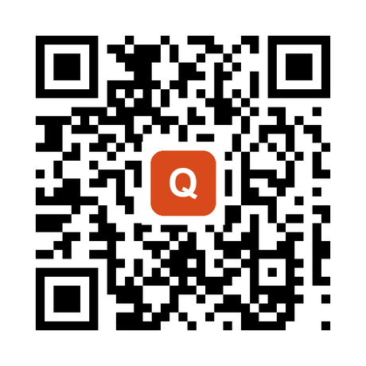
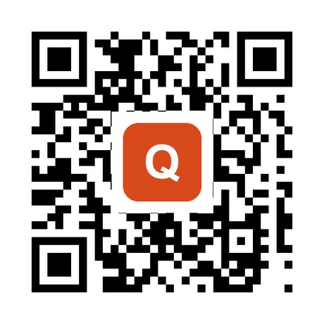
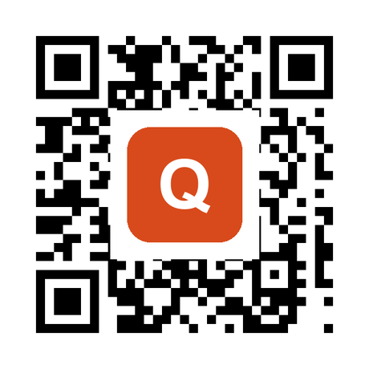

How big can a QR code logo be before it stops scanning?
A centered logo can cover about 15% of a QR code's area at error correction level H before it stops scanning reliably. That is roughly half the "20 to 30%" you read everywhere else.
I know because I generated codes at every logo size and decoded them until they broke. Below level H you get far less room. And the "logo size" number your generator shows you is almost never the percentage of the code your logo actually covers, which is a big part of why people get this wrong.
What I actually measured
Most pages that answer this repeat a number ("keep it under 20%," "level H lets you cover 30%") without ever testing it. So I tested it. I generated QR codes for a typical link, dropped a solid centered logo on each one at increasing sizes, and fed every result through two separate decoders (the zxing engine that most phone cameras are built on, plus OpenCV as a stricter second opinion). A size "passes" only if both decoders read the original link back.
Here is a typical branded link (around 30 characters, a version 2 code) at error correction level H, the highest setting and the one you should always use with a logo:
| Logo covers this % of the code's area | Still scans? |
|---|---|
| 8% (what most tools default to) | Yes |
| 12% | Yes |
| 15% | Yes, this is the edge |
| 18% | Yes, barely |
| 20% | No |
| 25% | No |
| 30% (the number everyone cites) | No |
Centered logo, level H, ~30-character link. The last size that scanned was 18%; 20% and up failed on both decoders. I treat 15% as the safe ceiling for print, where you don't get a second try.
You can see it clearly with three codes. All three point to the same link. The only difference is logo size:



The middle code and the right code look only a little different. One scans, one doesn't. That gap is why you test before you print.
Two more things fell out of the test that matter:
- Level H is the only setting worth using with a logo. On the same link, error correction Q and M topped out around 12% coverage, and level L failed with a logo of almost any size. If your generator lets you pick a level, pick H.
- Denser codes give you less room. A longer URL builds a bigger, busier code, and the safe logo size shifts with it. The 15% ceiling assumes a short, clean link. Long links, tracking parameters, and vCards all shrink it.
Why the "30%" number is wrong
The "you can cover 30%" claim comes from a real fact told sloppily. Error correction level H can rebuild about 30% of a QR code's data if it gets damaged. People hear "30%" and assume that means a logo can cover 30% of the code. It doesn't, for two reasons.
First, error correction only protects the data area. It does nothing for the three big squares in the corners, the dotted lines between them, or the smaller alignment square. Those are the patterns a scanner uses to find and lock onto the code in the first place. A logo that grows into any of them kills the scan instantly, no matter what level you picked. On a small code, a centered logo reaches them faster than you'd think.
Second, that 30% assumes damage is spread out, like scratches and coffee stains scattered across the whole code. A logo is the opposite: it wipes out one solid block in the middle. Denso Wave, the company that invented the QR code, says this directly in its own documentation, noting the recovery rate assumes damage "distributed across the total codewords rather than concentrated in specific areas." A centered logo is concentrated damage, so it eats into your margin far faster than the flat percentage suggests. That is why the tested ceiling lands near 15%, not 30%.
The trap in the "logo size" slider
Here's the part almost nobody explains. When a QR generator shows you a "logo size" of 0.4 or 40%, that is usually not the share of the code your logo covers.
Take qr-code-styling, one of the most widely used open-source QR libraries. In its code, the logo area works out to imageSize × the error correction percentage. So a "logo size" of 0.4 at level Q (25%) actually covers about 10% of the code's area, not 40%. The slider is measured against your error correction budget, not the code.
The other half of the confusion is width versus area. People eyeball a logo by its width, but scanning depends on area, and area grows with the square of width. A logo whose width spans 40% of the code covers only about 16% of its area. So "my logo looks like it takes up 40%" and "keep it under 15%" can both be true. They're measuring different things.
This is why QR Codes Made Easy caps the logo at a width of about 28% and forces level H automatically. That works out to around 8% of the area, deliberately on the safe side of the line, because a code you print is a code you can't take back.
How to add a logo without breaking the scan
- Use error correction level H. It's the only level with enough margin to spare for a logo. Any decent generator, including the free QR Codes Made Easy generator, will let you set it, and some switch to it for you the moment you add an image.
- Keep the logo small. Width under ~40% of the code, which lands you near 15% of the area or less. When in doubt, smaller. A logo people can't scan isn't branding, it's a dead square.
- Center it and give it a white pad. A logo sitting on a small white background (a "knockout") keeps its edges from blurring into the code's dots. Centering keeps it away from the corner patterns.
- Keep strong contrast and a clear border. Dark code on a light background, and leave the quiet zone (the empty margin, about four dots wide) alone. Contrast and the border matter as much as logo size.
- Test before you print. Scan the finished file with two different phones, one iPhone and one Android, from the distance people will really use. This is the last step on the pre-print checklist, and it's the one that saves the reprint.
That covers the scan. The rest of getting a code printed well, where to place it, how big to make it on each surface, and the contrast rules that survive real ink, is what I'm putting in the Brand Field Guide to QR Codes.
FAQ
How much of a QR code can a logo cover?
About 15% of its area at error correction level H, based on decoding codes at every size until they failed. That's a safe ceiling for print. You can sometimes push to ~18%, but the margin gets thin and depends on how much data the code holds. Below level H, you get far less room.
What error correction level should I use for a QR code with a logo?
Level H, every time. It's the highest of the four levels (L, M, Q, H) and the only one with enough spare capacity to survive a logo covering part of the code. On my tests, levels M and Q topped out near 12% coverage and L failed with almost any logo.
What happens if the logo is too big?
The code stops scanning. It usually doesn't get "slower," it just fails, because the logo either erases more data than error correction can rebuild or grows into the corner and timing patterns a scanner needs to lock onto the code. The jump from "works" to "dead" is small, which is why testing matters.
Does putting a logo in the middle affect scanning?
Yes, but the middle is the safest place for it. A centered logo stays away from the three corner squares and the alignment square, which are the patterns error correction can't protect. Keep it centered and keep it small.
Can I put any logo on a QR code?
Mostly, if you keep it small and high contrast. A simple, solid logo on a white pad works best. Thin lines, low contrast, or a logo that fades into the code's dots will hurt scanning more than a bold, compact mark of the same size.
How do I test that my QR code still scans?
Open the exported file at full size and scan it with two phones, one iPhone and one Android, from the distance your audience will use. Test the actual file you're sending to print, not the preview. If both phones read it instantly, you're good.
Make one that scans
QR Codes Made Easy caps the logo at a safe size and uses level H for you. Free, no account, and the code never expires.
Build your brand QR code